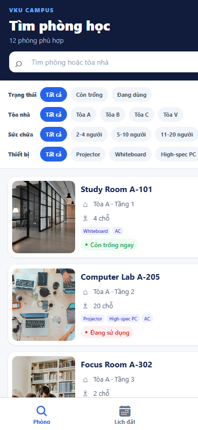
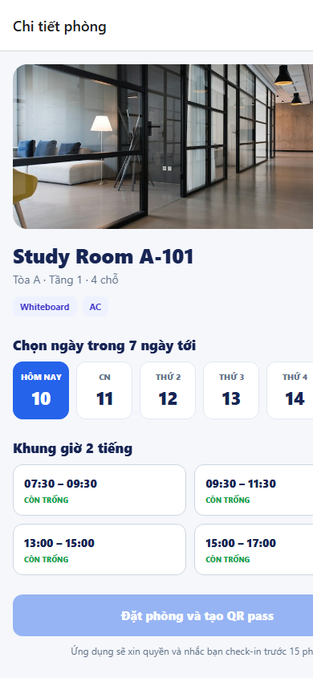
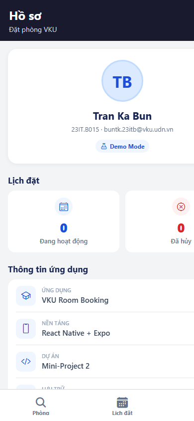

Short Technical Report · React Native & Expo
GitHub: github.com/bunwg29/room-booking
APK: builds/VKU-Room-Booking-v1.0.0.apk
Install: EAS Build eabbb550 · Video: Not provided.
| # | Required feature | Status | Implementation evidence |
|---|---|---|---|
| 1 | Room discovery + FlatList | Complete | 12 typed rooms, responsive 1/2/3-column list, photos, capacity and live status. |
| 2 | Multi-parameter filters | Complete | Search; status; buildings A/B/C/V; capacity 2–20; four equipment types. |
| 3 | 7-day time-slot selector | Complete | Seven dates and four discrete 2-hour slots. |
| 4 | Conflict prevention | Complete | UI disabling plus store-level interval validation. |
| 5 | Booking pass + QR check-in | Complete | Unique pass and real scannable QR payload. |
| 6 | Zustand + AsyncStorage | Complete | Session, bookings, check-in and cancellation persist offline. |
| 7 | 15-minute local reminder | Complete | Native date trigger; reminder cancelled after check-in/cancellation. |
src/ ├── app/ routes & tabs ├── components/ cards & QR modal ├── data/ room catalogue ├── hooks/ React Query hooks ├── screens/ feature screens ├── services/ rules & reminders ├── store/ persisted Zustand └── types/ domain models
Rooms load through a typed data-source boundary and React Query. A booking action enters the Zustand store, which rechecks conflicts, requests notification permission, persists the booking, then immediately updates every subscribed screen.
Static room occupancy and active local bookings are combined into derived “Available Now / Occupied” UI states.
sameRoom && sameDate && newStart < existingEnd && newEnd > existingStartThe rule is applied both when painting disabled slots and again inside addBooking. This second guard prevents stale UI or rapid taps from inserting overlapping reservations.
Expo SDK 57 · React Native 0.86 · TypeScript · Expo Router · Zustand · AsyncStorage · React Query · Reanimated · Expo Notifications · SVG QR



The app stores and displays the required identity:
Tran Ka Bun
23IT.B015
buntk.23itb@vku.udn.vn
Active and cancelled booking totals are derived directly from the persisted store.
npm run lint — PASSnpm run typecheck — PASSnpx expo-doctor — 21/21 PASSnpx expo export --platform web — PASSRoom discovery, filters, scheduling, conflict prevention, offline persistence, QR check-in, cancellation and local reminders are implemented. The app builds for Expo and the responsive web target.
There is no authenticated backend or multi-device synchronization. A demo video remains a delivery item.